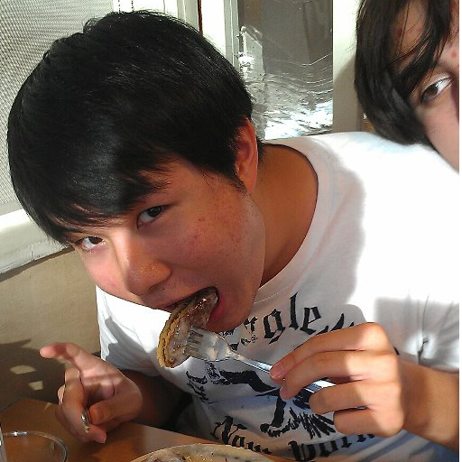
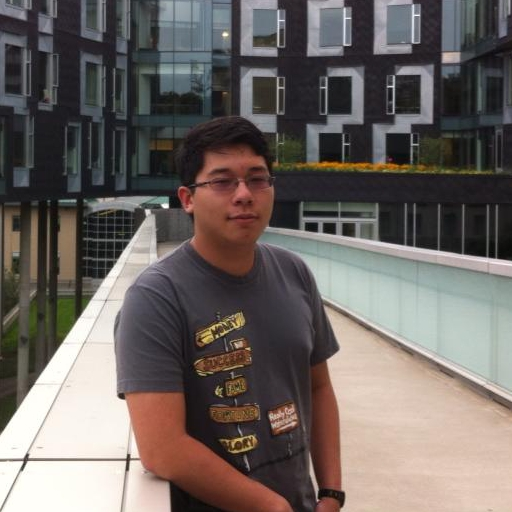
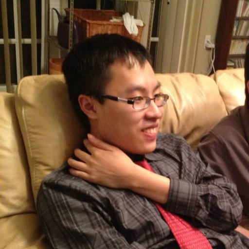

think beyond ink.
think beyond ink.Who We Are
-
-CEO
Daniel Suh
After a successful freshman year at the University of Michigan, I am looking to pursue a Mechanical Engineering degree with a minor in Multidisciplinary Design. My research at Montefiore Hospital on cancer cells led me to the marvels of 3D bioprinting, and thus began my interest in 3D printing. I founded an Entrepreneurs’ Club at Edgemont High School. We received an educational grant and purchased a 3D printer for our school with the money. I continued to expand my entrepreneurial experiences by participating in MPowered Entrepreneurship. My team developed a vlogging site that connected student entrepreneurship groups across the country. Besides entrepreneurial experience, I have accumulated other skills during my time at Michigan. I am capable of programming in C++ and HTML/CSS, and am familiar with modeling software such as NX 8.5 and AutoCad. In my spare time, I like to come up with future entrepreneurial projects to pursue and relax with my brothers at the Michigan Chapter of Triangle Fraternity and my friends.
-
-CTO
Teddy Lee
I am a student at Carnegie Mellon University. I’m studying Electrical and Computer Engineering and minoring in Animation. My main area of expertise is additive manufacturing technology. I am proficient in programming in several languages including C, Java, and HTML/CSS/Javascript. In addition I am comfortable in several CAD packages including Solidworks and openSCAD as well as more organic modeling/animation tools such as Autodesk Maya. I enjoy modeling funny objects in my spare time.
-
-COO
Sensen Chen
I’m a student at Rensselaer Polytechnic Institute. I’m majoring in computer science and minoring in design. I am knowledgeable in many programming languages including C++, Html/CSS, Python, and Java; additionally I am proficient in adobe photoshop. I enjoy playing pool in my free time and designing new programs and games.
-
-CFO
JNads
I am currently a sophomore at The University of Massachusetts at Amherst. I am currently a ‘Dean’s list’ student pursuing a double major in political science and psychology; through this I am on a ‘Pre-Law’ track towards law school. In addition to my studies I enjoy fencing and public speaking / debate. Throughout high school I worked as a political canvasser and advisor for numerous small scale political campaigns. In my free time I enjoy sleeping, a lot.
-
-CMO
Anderson Shu
I am currently a sophomore at The University of Michigan. As of now, I am majoring in biology and minoring in psychology. Despite my current studies, I harbor a love for design and art and have served as an illustrator and designer for a variety of organizations which include the school newspaper and Pi Alpha Phi. I am proficient in GIMP and enjoy drawing graphic novels and doodling in my free time.